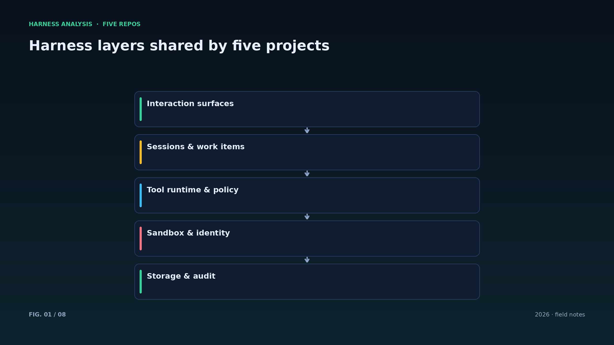
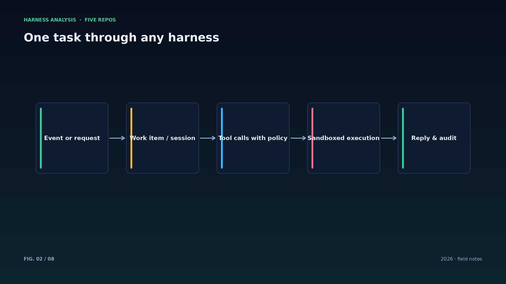
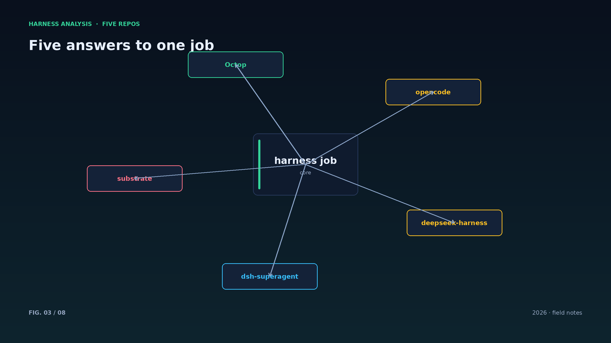
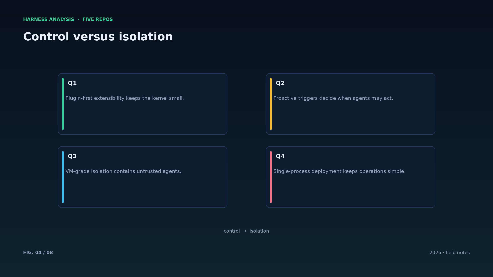
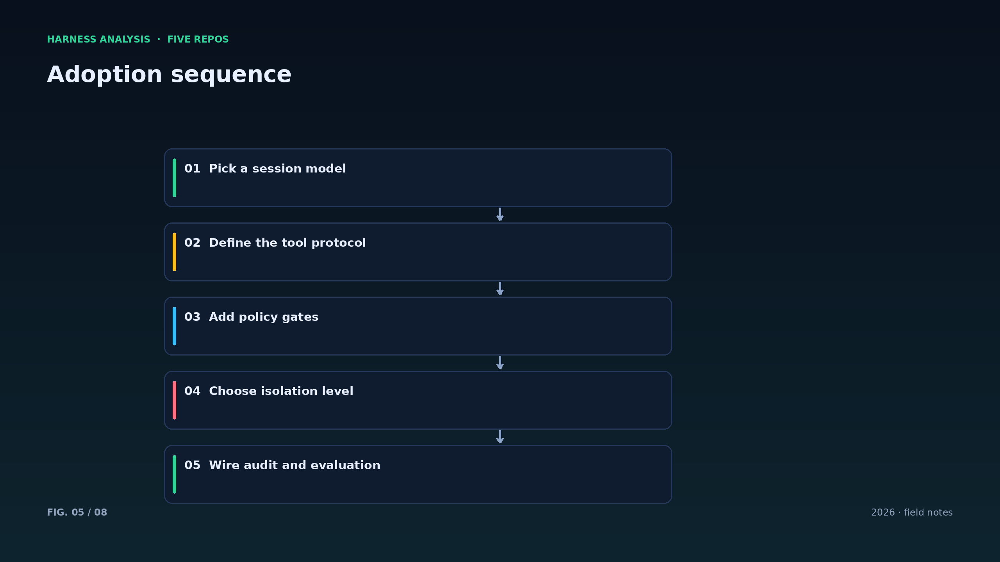
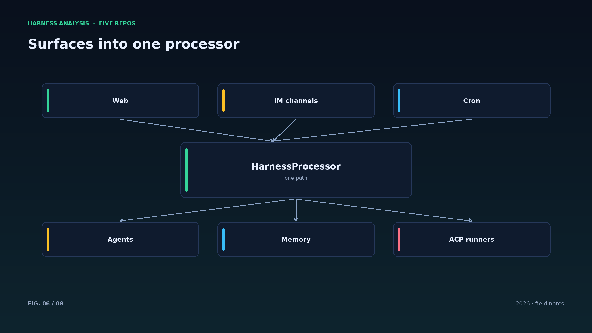
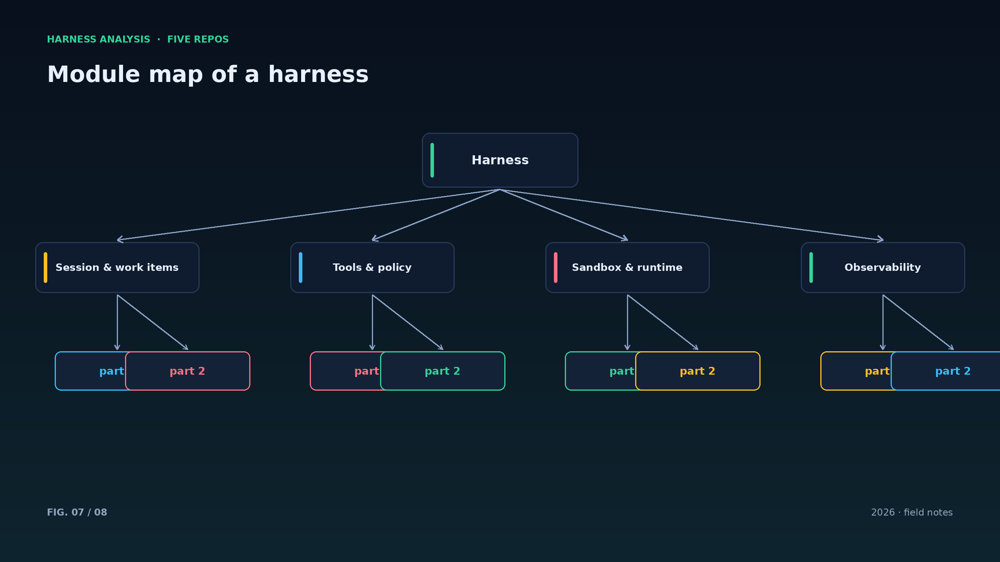
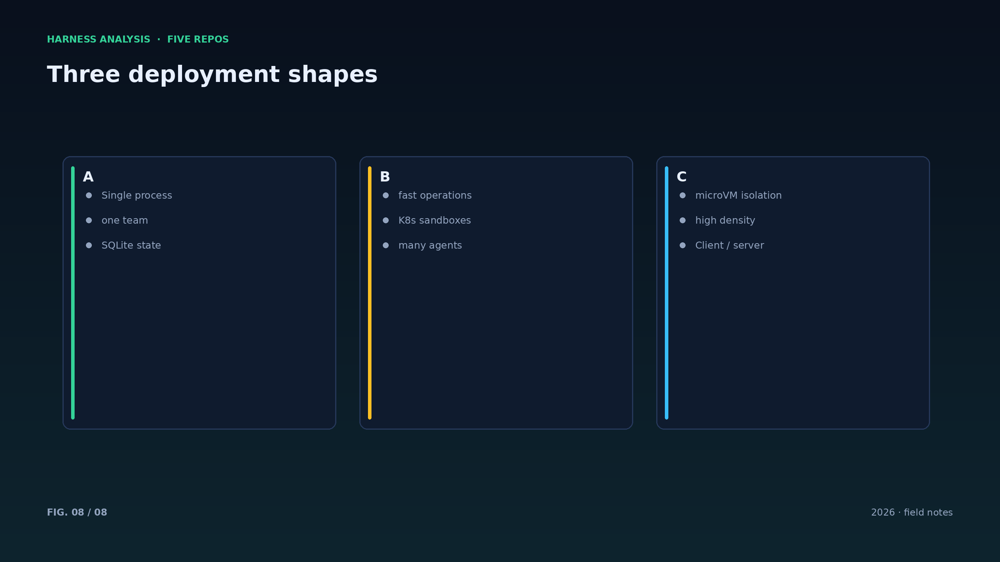

harness analysis · 01
同一个任务，五种答案：五个项目怎么定义 Harness
One Job, Five Answers: How Five Projects Define a Harness
把模型接进真实世界的那层工程，五个项目给出了五种侧重不同的回答。这一篇先把全景铺开，后面十一篇逐一拆解。
harness 的职责可以压成一句话：把一次意图变成一串可执行、可审计、可恢复的动作。deepseek-harness 用插件内核回答“怎么长”，dsh-superagent 用工作项回答“什么时候动”，Substrate 用沙箱回答“在哪里跑”，Octop 用单进程回答“怎么部署”，opencode 用 client/server 回答“在哪里用”。
把这五个答案叠在一起，会得到一条共同的骨架：入口归一化、会话与工作项、工具与权限、隔离执行、检查点与审计。差别不在骨架，而在每一层的默认值与权衡顺序。
三种部署形态浮出水面：单进程（Octop）把运维成本压到最低；Kubernetes 沙箱（Substrate）把隔离与密度推到最高；client/server（opencode）把多端体验做到最好。选择哪一个，取决于团队规模与安全预算，而不是趋势。
接下来的篇章会按这条骨架逐层展开：会话、工具、权限、插件、沙箱、多端、上下文、事件、可观测性、性能与部署，最后回到“如何自建”。每一篇都会指出五个项目在同一问题上的分歧点。
衡量一套 harness 好坏，可以只看三个指标：任务完成率、单位成本、事故半径。完成率取决于循环与工具，成本取决于上下文与并发，事故半径取决于权限与隔离——这三件事恰好对应后面章节的三条主线。
阅读顺序建议沿骨架走：先看会话（第 2 篇），再看工具与权限（第 3 篇），然后插件与沙箱（第 4、5 篇），最后多端、上下文与部署。每一篇可独立阅读，连起来才是完整的施工图。
五个项目的 README 有一个共同点：它们都在描述边界——DSH 描述插件边界，superagent 描述行动边界，Substrate 描述隔离边界，Octop 描述进程边界，opencode 描述客户端边界。学会看边界，比看功能列表更能理解一个 harness。
另一个共同点是克制：superagent 只在被要求时行动；Substrate 默认拒绝网络；Octop 默认单用户隔离；opencode 的 plan agent 默认只读；DSH 的内核默认什么都不会。默认值决定了系统的性格。
本系列不做代码走读，而是把每个项目当作一份架构决策记录来读：它选择了什么、放弃了什么、代价落在哪里。读完之后，你应该能画出一张属于自己的 harness 版图。
Architecture figures








ENGLISH
One Job, Five Answers: How Five Projects Define a Harness
The layer that turns a model into a working system has five very different expressions in these projects. This opening piece maps the landscape before the next eleven dissect it.
A harness has one job: turn an intent into a sequence of executable, auditable, recoverable actions. deepseek-harness answers "how does it grow" with a plugin kernel; dsh-superagent answers "when does it act" with work items; Substrate answers "where does it run" with sandboxes; Octop answers "how is it deployed" with a single process; opencode answers "where is it used" with a client/server split.
Overlay the five answers and a shared skeleton appears: normalized entry points, sessions and work items, tools and policy, isolated execution, checkpoints and audit. The differences are not in the skeleton but in defaults and the order of trade-offs.
Three deployment shapes emerge: single process (Octop) minimizes operations; Kubernetes sandboxes (Substrate) maximize isolation and density; client/server (opencode) maximizes multi-surface experience. The right choice depends on team size and security budget, not fashion.
The rest of the series walks the skeleton layer by layer: sessions, tools, policy, plugins, sandboxes, surfaces, context, events, observability, performance and deployment — ending with a practical plan for building your own.
Three metrics tell whether a harness is good: task completion, unit cost, and blast radius. Completion depends on the loop and tools, cost on context and concurrency, blast radius on permission and isolation — precisely the three threads of the chapters ahead.
All five READMEs describe boundaries: DSH the plugin boundary, superagent the action boundary, Substrate the isolation boundary, Octop the process boundary, opencode the client boundary. Reading boundaries teaches more than reading feature lists.
They also share restraint: act only when asked, deny the network by default, isolate by default, read-only by default, an ignorant kernel by default. Defaults define a system's character more than its capabilities.